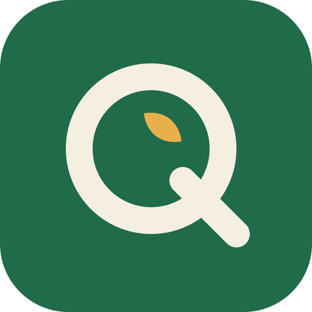

Quella Foods is a fictional company created for the Chesky product demo. Every name, number and event on this page is invented.

Quella Foods
Good food, made close to home.
Quella Foods is a global food and beverage company. We make everyday staples, snacks and drinks under 12 brands, sold in all 50 states and Canada. Founded in 1987 in Milwaukee, headquartered in Chicago.
12brands
50states
$4.4Bnet sales, 2025
18,500people
Our brands
Solar Oats
Breakfast cereals and oat drinks. Our largest brand, 22% of sales.
Brisa
Sparkling and still flavoured waters, low sugar.
Casa Verde
Plant-based meals and spreads.
Crunchwell
Baked snacks for kids' lunchboxes.
Mareta
Ready salads and grain bowls.
Pico Pantry
Sauces, stocks and seasonings.
Halden Dairy
Yogurts and cheese from the Midwest.
Tidy Bites
Protein bars and portion snacks.
Rio Café
Ground and pod coffee.
Little Field
Baby food pouches.
Amber Hill
Premium teas and infusions.
Nuvo
Functional drinks, launched 2024.
Where we sell
The United States (91% of sales) and Canada (9%). Biggest regions: the Midwest, the Southeast, Texas and California. Sold through supermarkets, convenience stores, e-commerce and quick-commerce apps.
Strategy 2026–2030
Grow the core. Win shelf space for Solar Oats and Brisa in the 4 biggest regions.
Healthier portfolio. Cut added sugar 25% across the range by 2028.
Digital commerce. Take online sales from 9% to 20% of revenue.
Sustainable packaging. 100% recyclable or reusable packaging by 2030.
Revenue growth management. Smarter pricing and promotions as input costs rise.
Competitors
Large national food groups, retailer private labels and fast-growing direct-to-consumer brands in plant-based food and functional drinks.
Challenges this year
Cocoa and coffee costs are up 30% year on year, pressuring Rio Café margins.
Private labels are taking share in cereals in the Midwest.
Nuvo is growing fast online but struggles to get supermarket listings.
Quick-commerce apps now ask for higher promotion budgets.
Newsroom
November 4, 2026Brisa launches a zero-sugar range in the Southeast, with a 6-week promotion in convenience stores.
October 28, 2026Q3 results: net sales up 4.2%, volumes flat; the Southeast up 9%.
October 15, 2026Solar Oats loses a major listing at a national discount chain to a private label.
September 30, 2026Quella Foods signs a quick-commerce partnership covering 6 US cities.
September 9, 2026Casa Verde moves to fully recyclable trays in all stores.
Careers
Brand Manager, Brisa · Chicago
Own Brisa's growth plan in the US: the zero-sugar launch, pricing and promotions with retail and quick-commerce partners, and the brand's numbers week to week. You work with sales, finance and our agencies.
Revenue Growth Analyst · Chicago
Turn sell-out data into pricing and promotion decisions across the US.